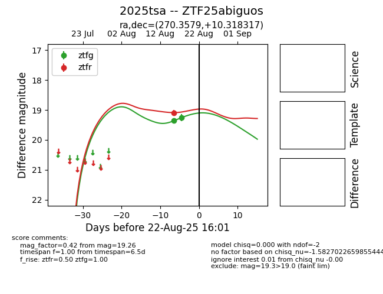

Target 2025tsa at 2025-08-22 16:31, see:
FINK: fink-portal.org/ZTF25abiguos
Lasair: lasair-ztf.lsst.ac.uk/objects/ZTF25abiguos
ALeRCE: alerce.online/object/ZTF25abiguos
TNS: wis-tns.org/object/2025tsa
YSE: ziggy.ucolick.org/yse/transient_detail/2025tsa
alt names
ZTF25abiguos (ztf,alerce)
2025tsa (tns,yse)
coordinates:
equatorial (ra, dec) = (270.3579,+10.31832)
galactic (l, b) = (36.6432,+15.73637)
photometry
last atlaso=19.30, ztfg=19.26, ztfr=19.09
2 atlaso, 2 ztfg, 1 ztfr detections
